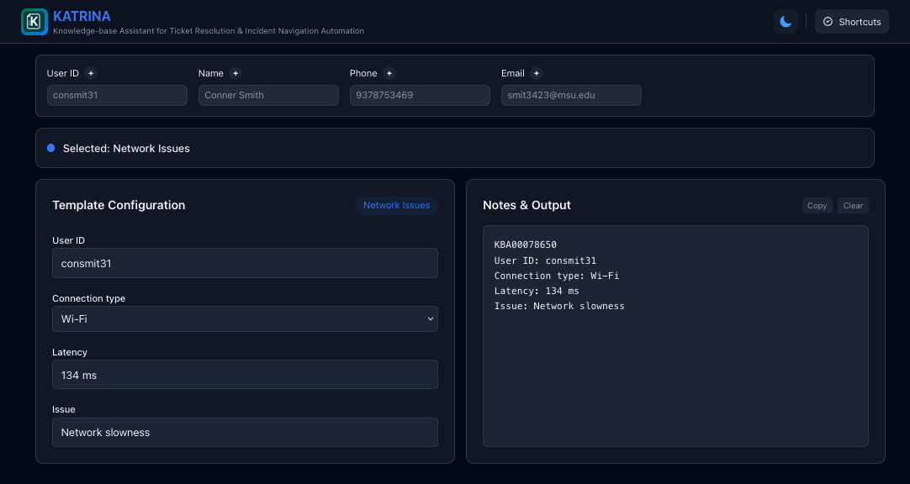

Welcome
I am a Michigan State University alumnus with a Bachelor's degree
in Computer Science and a passion for building practical, user-focused
software. Throughout my academic and professional experience, I have
developed mobile, web, and desktop applications that solve real-world
problems and improve user workflows.
The projects showcased here reflect the breadth of my work—from full-stack web applications and backend services to mobile solutions built in collaboration with industry partners. I am committed to continuous learning and growth, always exploring new tools, frameworks, and technologies to refine my craft and deliver better experiences.
Below, you'll find links to my projects, resume, and contact information. I look forward to connecting and discussing opportunities to build intuitive, scalable, and impactful software.
The projects showcased here reflect the breadth of my work—from full-stack web applications and backend services to mobile solutions built in collaboration with industry partners. I am committed to continuous learning and growth, always exploring new tools, frameworks, and technologies to refine my craft and deliver better experiences.
Below, you'll find links to my projects, resume, and contact information. I look forward to connecting and discussing opportunities to build intuitive, scalable, and impactful software.
Projects
KATRINA
KATRINA (Knowledge-base Assistant for Ticket Resolution & Incident Navigation Automation)
is a privacy-first template management tool designed to
eliminate repetitive documentation and form-filling. Built with
modern web technologies and storing all data locally in your
browser, it lets you create customizable templates, group them
by issues, and generate dynamic forms that adapt as you enter
information—without relying on external servers. Whether you're
handling IT tickets, producing reports, or standardizing workflows,
KATRINA streamlines your process with real-time validation, smart
parsing, and intuitive navigation. It's a secure, efficient, and
offline-capable way to make repetitive tasks faster and more consistent.

Better Cube
As a personal project, I developed a web application that allows useres to
track their Rubik's Cube times and statistics. The app uses React and Tailwind CSS
to create a responsive and user-friendly interface, as well as the cubing.js library
for random state scrambles and images of scrambles. It also includes a timer and
indexedDB to store user data. The app is hosted on Vercel and is open source on GitHub.

Whirlpool - Cooking GPS
In collaboration with Whirlpool, my team and I developed a mobile
application that guides users through the cooking process.
The app leverages a Job-shop style algorithm to calculate the
optimal order of steps for a recipe, and provides users with a list
of all of the steps in order so that each recipe comes out warm
simultaneously. The app uses Flutter for the front-end and Python
for the back end and Websockets for real-time updates on a user's
Whirlpool appliance screen.


Trello Clone
A clone of the popular list-making application, Trello.
Utilizes Flask, MySQL, a user-authentication system, and Web
Sockets to allow for live updates and chats between users.

Contact
Let's connect! Feel free to reach out for collaboration opportunities or just to say hello.